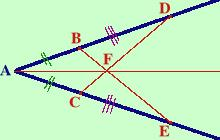

|
Sui lati dell'angolo A si prendano due segmenti AB ed AC congruenti e, consecutivamente, altri due segmenti congruenti BD e CE. Si unisca B con E e C con D. Sia F il punto di intersezione: dimostrare che la retta AF e' la bisettrice dell'angolo A Prendo (in blu scuro) un angolo A e su di esso i punti B e C ad uguale distanza da A (segno con 2 lineette verdi i segmenti AB ed AC per indicare che sono congruenti)  Considero poi i punti D ed E ad uguale distanza da B e C (segno con 3 lineette viola i segmenti BD e CE per indicare che sono congruenti) Congiungendo B con D e C con E ottengo i segmenti BD e CE ed al loro incrocio individuo il punto F. Traccio infine la semiretta di origine A e passante per F |